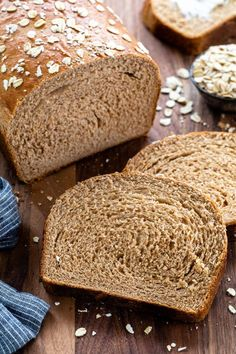

Loaf Bread Recipe
A soft and fluffy loaf of bread, perfect for sandwiches or to enjoy fresh from the oven.
Ingredients
- 500g bread flour
- 1 packet dry yeast
- 1 teaspoon salt
- 300ml warm milk
- 2 tablespoons butter
Instructions
- In a bowl, combine yeast, salt, and flour. Add warm milk and butter, and knead for 10 minutes.
- Let the dough rise for 1 hour, then shape it into a loaf.
- Preheat the oven to 180°C (350°F) and bake for 25-30 minutes.
